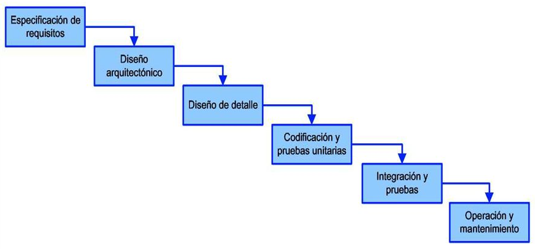
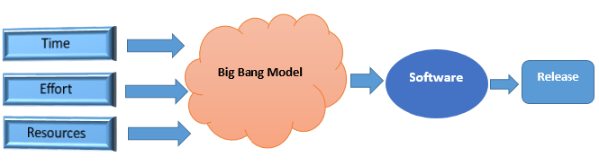
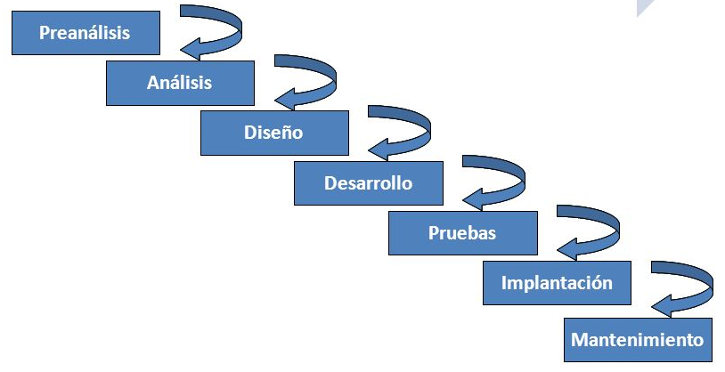
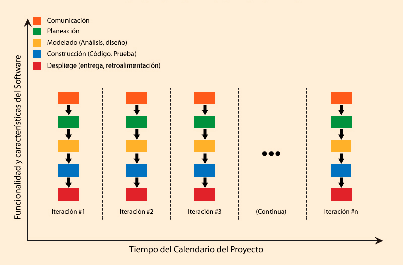
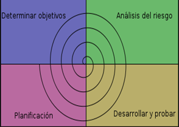
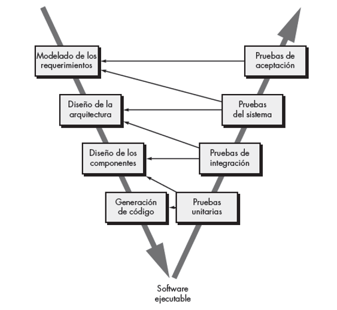
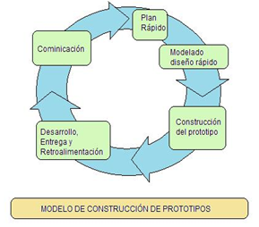
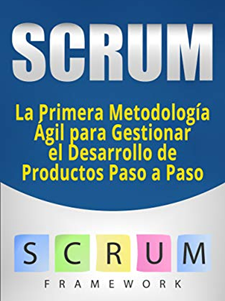
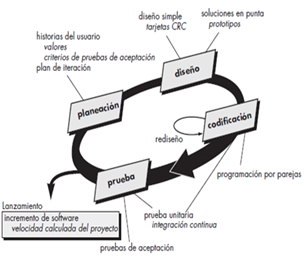

El ciclo de vida del software describe el proceso de desarrollo del software, desde la etapa inicial hasta la etapa final. El ciclo de vida del software se compone de una serie de procedimientos necesarios para la realización de ese software; con el fin de validar el desarrollo de la aplicación, o garantizar que el software cumpla los requisitos definidos, necesarios y apropiados para la aplicación, y con la verificación de los procedimientos de desarrollo.
La razón fundamental de esos procedimientos es ahorrar costos al rectificar los errores tardíos presentados en etapa de implementación. Se trata de identificar tempranamente los errores, para que el proceso de desarrollo se ocupe del ahorro de costos, en mejores tiempos de entrega y en una mejor calidad del software.
El ciclo de vida del desarrollo de software se puede considerar una subcategoría del ciclo de vida de desarrollo de sistemas, y se conoce como SDLC (siglas en inglés de Software Sevelopment Life Cycle).

Las fases generales del ciclo de vida de desarrollo de software son:
Hay un marco de referencia, la norma ISO 12207-1; que contiene los procesos, las actividades y las tareas involucradas en el desarrollo, la explotación y el mantenimiento de un producto de software, abarcando la vida del sistema desde la definición de los requisitos hasta la finalización de su uso. Los siguientes son los procesos del ciclo de vida del software:
La Reutilización en el ciclo de vida del software:
El ciclo de vida del software inicia con la especificación de requerimientos por parte del cliente, y finaliza con la entrega del producto de software al cliente y que cumpla con sus expectativas. Existe una gran variedad de metodologías de desarrollo de software, las que están compuestas por una serie de pasos o fases; y que aquí mencionaremos las más importantes:
Modelo Big Bang

Este modelo se fundamenta alrededor de la teoría de creación del universo Big Bang, en la que desde un punto de vista científico después de la gran explosión o big bang muchas galaxias, planetas y estrellas evolucionaron.
Este modelo requiere muy poca planificación, y consecuentemente es el más sencillo o simple. No se sigue un proceso concreto, y en ocasiones no se tiene claridad respecto a futuras necesidades y/o requisitos; por lo que equivalentemente reuniendo bastantes recursos económicos y programación, posiblemente se logre el producto de software más óptimo.
El modelo puede servir para aprender y experimentar, pero no es recomendable para proyectos grandes de software.
Modelo en Cascada
 Es el modelo más simple en desarrollo de software por ser de la antigua década de los sesenta, y en la que se siguen de manera secuencial una serie de fases predefinidas; avanzando únicamente si se finaliza completamente la fase anterior. Es apropiado cuando ya se ha diseñado y desarrollado softwares similares anteriormente y se tiene la suficiente experticia al respecto. Las fases que componen esta metodología son:
Esta metodología por ser estrictamente lineal y no tener la posibilidad de retroalimentación puede resultar costosa en la actualidad, porque las especificaciones de requerimientos suelen cambiar o ser dinámicas a través del desarrollo de los proyectos de software, y el modelo en cascada no es flexible para satisfacer esas “nuevas” necesidades.
Modelo repetitivo o iterativo

El proceso de desarrollo de software se lleva a cabo mediante repeticiones o iteraciones, de todos y cada uno de los pasos. Inicialmente el desarrollo se hace a un nivel básico, y en cada repetición, más módulos y características son diseñados, codificados, evaluados y añadidos al producto de software; de manera que en cada ciclo se añaden más características y capacidades que los anteriores.
Teniendo en cuenta que los ciclos comprenden porciones de la totalidad del proceso de desarrollo de software, se facilita la gestión del proceso de desarrollo pero esto a la vez implica mayor consumo de recursos.
Modelo en Espiral

Consiste en realizar iteraciones o recorridos por todas las fases de desarrollo de software. Se realizan tantas iteraciones como sean necesarias para lograr el resultado esperado, es decir es dinámico a diferencia del modelo en cascada; y a la vez se reducen los riesgos pero con la desventaja de ser costoso por la alta demanda de recursos que implica. Sus fases generales son: Establecer objetivos, Analizar riesgos, Desarrollar, Probar, Planeación.
Este modelo a diferencia de los demás contempla el riesgo, pues al iniciar cada repetición se determinan los objetivos y las limitaciones del software; para que en la siguiente etapa y con base en el análisis de riesgos se creen los modelos de prototipos del software.
Modelo V

También se conoce como modelo de validación y verificación, que se desarrollan en paralelo. En cada fase se planean las pruebas y los casos de pruebas, para verificar y validar el producto de software según los requisitos de la respectiva fase. Como ejemplo, en el diseño de los componentes los evaluadores alistan las pruebas del caso pertinentes a los requisitos de dichos componentes.
La principal ventaja de este modelo V es que permite posibilidades de evaluación del producto de software en cada fase en forma inversa.
Modelo por Prototipos

Como su nombre lo indica se construyen prototipos, resultado de iteraciones o recorridos en el proceso de desarrollo de software. Puede ocurrir que alguno de esos prototipos llegue a ser el producto final deseado. Una de sus ventajas es la posibilidad de reutilización de código, ya que cada prototipo es una mejora del anterior. Otro aspecto relevante es la permanente retroalimentación con los interesados en el proyecto, como los clientes y/o usuarios del software.
Modelo Scrum

Metodología de desarrollo ágil y reciente. El proceso es incremental respecto de las iteraciones, fases y calidad del equipo de desarrollo.
Es una metodología muy dinámica, pues se puede devolver en las fases del proyecto cuantas veces sea necesario y los requerimientos lo demanden, con una buena comunicación.
Procesos que se utilizan: Product Backlog, Sprint Backlog, Sprint Planning Meeting, Daily Scrum o Stand-up Meeting, Sprint Review, Sprint Retrospective.
Modelo Kanban
Se secciona visualmente el proyecto en etiquetas en un tablero, teniendo en cuenta las fases del desarrollo y los equipos de trabajo. Requiere equipos de trabajo muy bien calificados, pero se alcanza el producto final en un período de tiempo más corto.
Las fases del proceso con esta metodología son: Definir el Flujo de Trabajo, Fases del Ciclo de Producción, Stop Starting, Start Finishing, Tener Control.
Modelo XP –Programación Extrema

Completamente adaptable a las necesidades y/o requerimientos del cliente, que de hecho se involucra en el proceso de desarrollo. Se fundamenta en los valores: Comunicación, Simplicidad, Retroalimentación, Valentía, Respeto.
Sus principales características: Tipo de Desarrollo Iterativo e Incremental, Pruebas Unitarias, Trabajo en Equipo, Trabajo junto al cliente, Corrección de Errores, Reestructuración del Código, El Código es de todos, Código simple es la clave.